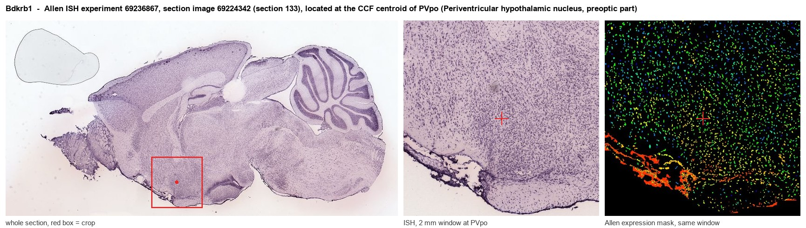
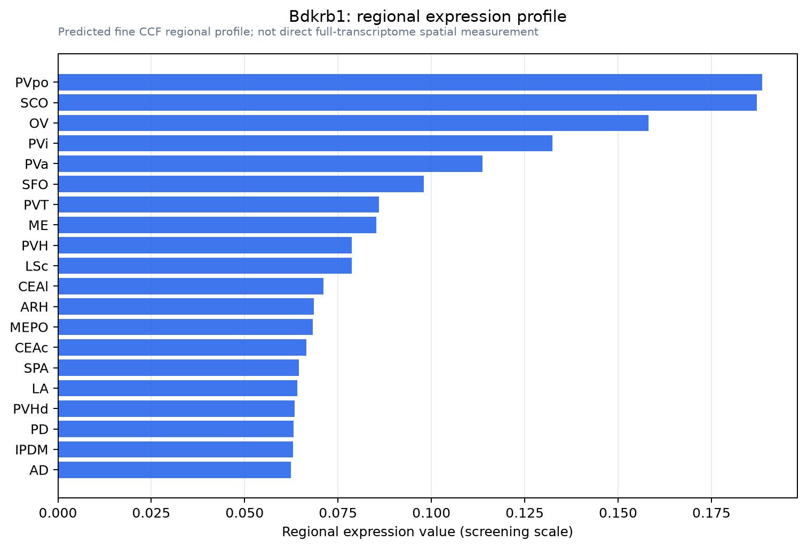

Bdkrb1
B1 bradykinin receptor (B1R) (BK-1 receptor)
Spatial tier: RESTRICTED · Class: GPCR · Top region: PVpo (Periventricular hypothalamic nucleus, preoptic part) · Positive regions: 13/554
44.2Discovery Score
34.8Targetability Score
CEvidence grade C
What this means: Bdkrb1: fine CCF profile is restricted toward PVpo (top regions: PVpo, SCO, OV, PVi, PVa; 13 positive regions); direct spatial validation is still required.
Function in PVpo: evidence, prediction, innovation
- Gene function
- Bdkrb1 encodes the B1 bradykinin receptor, a GPCR for the kinin metabolites des-Arg9-bradykinin and des-Arg10-kallidin. Unlike the constitutively expressed B2 receptor, B1 is nearly absent from healthy tissue and is strongly induced by LPS, IL-1beta and tissue injury through NF-kappaB. Once induced it signals via Gq to raise calcium and drive nitric oxide and prostaglandin production, mediating inflammatory pain and vasodilation.
- Region function
- The preoptic part of the periventricular hypothalamic nucleus lies along the third-ventricle wall and belongs to the preoptic continuum that controls neuroendocrine output, sleep, and febrile and thermoregulatory responses.
- Published in this region
- inferred No region-specific literature found. The closest result is Soares 2017, who showed that LPS-induced fever in rats depends on kallikrein-kinin signalling acting mainly through the B2 rather than the B1 receptor within preoptic febrile circuitry; B1 induction itself is documented in peripheral vasculature and nephron during endotoxaemia (Marin-Castano 1998; Schanstra 1999).
- Predicted function
- Prediction: because Bdkrb1 is an inflammation-inducible gene, a preoptic periventricular signal most likely reports perivascular endothelium, tanycytes and glia at the third-ventricle wall rather than neurons. During systemic inflammation, kinin B1 signalling there should raise local prostaglandin E2 production immediately adjacent to preoptic thermoregulatory neurons and so contribute to the late, sustained phase of fever and to sickness behaviour. Bdkrb1 deletion or a local B1 antagonist (R-715, SSR240612) is predicted to blunt late LPS fever and anorexia while leaving basal body temperature and the early B2-dependent phase intact.
- Innovation
- ★★★★☆ 4/5 Kinin control of fever has been pinned on the B2 receptor, leaving the inducible B1 receptor at the preoptic ventricular interface essentially untested despite good knockout and antagonist tools.
- Tools
- Bdkrb1 knockout mice; antagonists R-715, SSR240612 and des-Arg10-HOE140; agonist des-Arg9-bradykinin; anti-B1R antibodies; preoptic access via Vgat-IRES-Cre and tanycyte-targeted AAVs; no Bdkrb1-Cre line.
- References
Direct evidence located at the region

Allen ISH experiment 69236867, section image 69224342 (section 133): the section that contains the CCF centroid of Periventricular hypothalamic nucleus, preoptic part according to the Allen image-to-atlas alignment (reference_to_image), with a 2 mm window around that point. Left: whole section, red box = window. Middle: ISH signal. Right: Allen's expression-mask view of the same window. open this image in the Allen viewer
Look it up yourself: Allen Mouse Brain ISH for Bdkrb1Allen reference atlas: PVpo (structure 133)ABC Atlas MERFISH viewer(in the ABC Atlas choose dataset MERFISH-C57BL6J-638850-CCF, colour cells by gene "Bdkrb1" or by parcellation_substructure "PVpo")All genes confined to PVpo + 3-D brain
Direct spatial evidence
MERFISH REGION LOCATOR

Regional expression figure

Predicted WMB × fine-CCF profile; not direct full-transcriptome spatial measurement.
Spatial profile
Evidence and specificity
- Evidence status
- PREDICTED_FINE
- Direct sources
- None; predicted localization only
- Exclusive threshold
- 12 positive regions out of 554
- Spatial specificity
- 0.325
- Top-region fraction
- 0.074
- Filter status
- PASS
Interpretation limits
- Cell-type-to-region projection is imputed expression, not direct spatial measurement.
- Adult reference atlases do not establish stability across age, sex, strain, state, or disease.
- Transcript abundance does not guarantee protein abundance or genetic-tool performance.